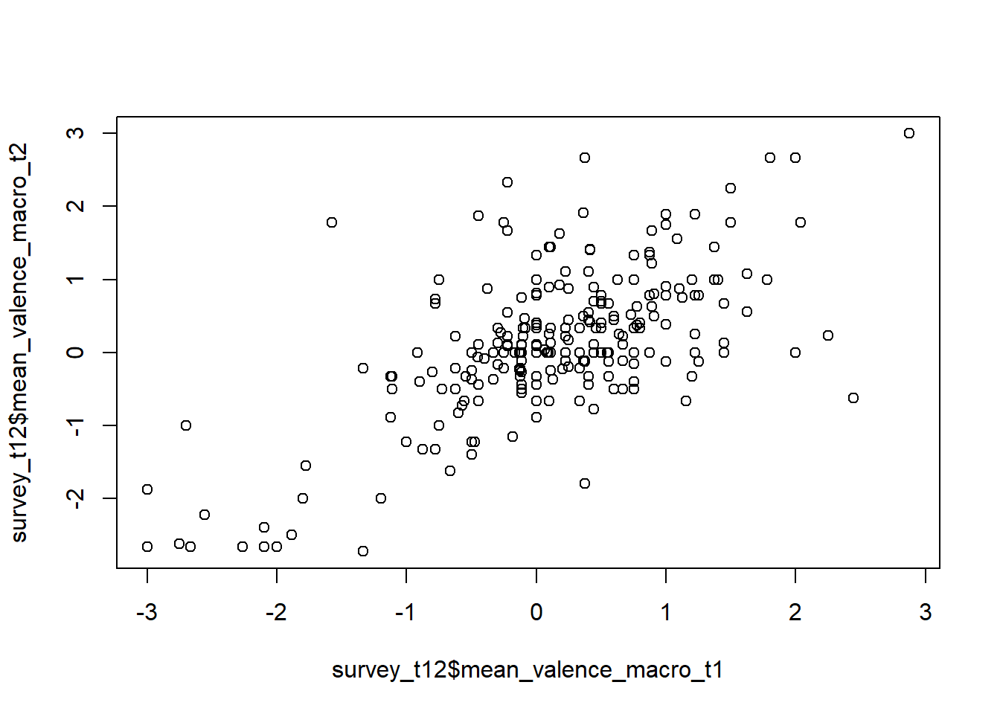

### global variables:
## for data cleaning CAMs
# remove all CAMs for which no word can be found in a German dictionary
global_removeFakeCAMs = TRUE # ! keep to TRUE
# save fake CAMs as R object
global_saveFakeCAMs = TRUE # TRUE / FALSE
## for data cleaning CAMs
global_removeIPs_num = 3 # numeric value; remove all participants which IP is more then "global_removeIPs_num" times in the data set
# remove participants flagged as SPAM by Qualtrics
global_removeSpam = TRUE # TRUE / FALSE
# remove participants with multiple ids (greater / equal than global_removeIPs_num)
global_removeIPs = TRUE # TRUE / FALSEData Preperation Climate Law Study
Background Information
This is an R Markdown document. Instructions for writing these documents and background information can be found in the book written by Xie, Allaire, and Grolemund (2018) When you execute code within the document, the results appear beneath the code.
The file include all analysis code for the published article XXX. In the article a multi-method approach was applied, whereby two modes of data collection - Cognitive-Affective Maps (CAM) and surveys - in accordance with two statistical procedures - graph theory (e.g., Newman 2018) and Latent Variable Models (e.g., Skrondal and Rabe-Hesketh 2004) - have been combined.
This file contains the pre-processing step (clean, transform data), whereby the folder “dataAnalysis” the analysis step (test hypotheses and exploratory analyses), which follows the classical data-analysis pipeline (see Peng and Matsui 2016; Wickham and Grolemund 2017).
Notes
Remark:
load raw data
Load R packages, functions:
# sets the directory of location of this script as the current directory
# setwd(dirname(rstudioapi::getSourceEditorContext()$path))
### load packages
require(pacman)
p_load('tidyverse', 'jsonlite', 'magrittr', 'xlsx',
'stargazer', 'psych', 'jtools', 'DT', 'ggstatsplot',
'lavaan', 'regsem', 'MplusAutomation', 'igraph', 'mapview')
### load functions
setwd("../functions")
for(i in 1:length(dir())){
# print(dir()[i])
source(dir()[i], encoding = "utf-8")
}
setwd("../functions_CAMapp")
for(i in 1:length(dir())){
# print(dir()[i])
source(dir()[i], encoding = "utf-8")
}
rm(i)Load raw data:
Remark: The survey data was collected using the Qualtrics-Software and the CAM data was collected using the C.A.M.E.L. software (Fenn et al. 2023), hosted on a JATOS-server.
### survey data
## t1
survey_p1_t1 <- read.csv(file = "data/t1/Klimagesetz.wave1.Teil1.csv", encoding = "UTF-8")
survey_p1_t1 <- survey_p1_t1[-c(1,2), ]
survey_p2_t1 <- read.csv(file = "data/t1/Klimagesetz.wave1.Teil2.csv", encoding = "UTF-8")
survey_p2_t1 <- survey_p2_t1[-c(1,2), ]
## t2
survey_p1_t2 <- read.csv(file = "data/t2/Klimagesetz.wave2.Teil1.csv", encoding = "UTF-8")
survey_p1_t2 <- survey_p1_t2[-c(1,2), ]
survey_p2_t2 <- read.csv(file = "data/t2/Klimagesetz.wave2.Teil2.csv", encoding = "UTF-8")
survey_p2_t2 <- survey_p2_t2[-c(1,2), ]
## t2 control group
survey_p1_t2_controlGroup <- read.csv(file = "data/t2_controlGroup/Klimagesetz.control.Teil1.csv", encoding = "UTF-8")
survey_p1_t2_controlGroup <- survey_p1_t2_controlGroup[-c(1,2), ]
survey_p2_t2_controlGroup <- read.csv(file = "data/t2_controlGroup/Klimagesetz.control.Teil2.csv", encoding = "UTF-8")
survey_p2_t2_controlGroup <- survey_p2_t2_controlGroup[-c(1,2), ]
### CAM data
## t1
read_file('data/t1/t1_climateLawStudy.txt') %>%
# ... split it into lines ...
str_split('\n') %>% first() %>%
# ... filter empty rows ...
discard(function(x) x == '') -> dfCAM_t1
dfCAM_t1_list <- list()
for(i in 1:length(dfCAM_t1)){
dfCAM_t1_list[[i]] <- jsonlite::fromJSON(txt = dfCAM_t1[[i]])
}
## t2
read_file('data/t2/t2_climateLawStudy.txt') %>%
# ... split it into lines ...
str_split('\n') %>% first() %>%
# ... filter empty rows ...
discard(function(x) x == '') -> dfCAM_t2
dfCAM_t2_list <- list()
for(i in 1:length(dfCAM_t2)){
dfCAM_t2_list[[i]] <- jsonlite::fromJSON(txt = dfCAM_t2[[i]])
}
## data at t2 - cross-sectional (control group)
read_file('data/t2_controlGroup/t2_climateLawStudy_controlGroup.txt') %>%
# ... split it into lines ...
str_split('\n') %>% first() %>%
# ... filter empty rows ...
discard(function(x) x == '') -> dfCAM_t2_controlGroup
dfCAM_t2_controlGroup_list <- list()
for(i in 1:length(dfCAM_t2_controlGroup)){
dfCAM_t2_controlGroup_list[[i]] <- jsonlite::fromJSON(txt = dfCAM_t2_controlGroup[[i]])
}
rm(dfCAM_t1)
rm(dfCAM_t2)
rm(dfCAM_t2_controlGroup)
rm(i)
### id data set to merge t1 and t2
df_IDs <- read.csv(file = "data/Match_participantID.csv", encoding = "UTF-8", sep=";")
df_IDs <- df_IDs[, c("participantID.wave1", "participantID.wave2")]
df_IDs <- unique(df_IDs)prepare data
survey data
Consistent missing values and naming of variables
### all missing values to NA
## t1
survey_p1_t1[survey_p1_t1 == ""] <- NA
survey_p2_t1[survey_p2_t1 == ""] <- NA
## t2
survey_p1_t2[survey_p1_t2 == ""] <- NA
survey_p2_t2[survey_p2_t2 == ""] <- NA
## t2 control group
survey_p1_t2_controlGroup[survey_p1_t2_controlGroup == ""] <- NA
survey_p2_t2_controlGroup[survey_p2_t2_controlGroup == ""] <- NA
### rename not consistently named variables
colnames(survey_p1_t1)[colnames(survey_p1_t1) == "u"] <- "participantID"
colnames(survey_p1_t2)[colnames(survey_p1_t2) == "u"] <- "participantID"
colnames(survey_p1_t2_controlGroup)[colnames(survey_p1_t2_controlGroup) == "attention_check"] <- "attention.check"
colnames(survey_p1_t2_controlGroup)[colnames(survey_p1_t2_controlGroup) == "u"] <- "participantID"
### rename not consistently named variable labels
# Finished
survey_p1_t2$Finished <- ifelse(test = survey_p1_t2$Finished == "Wahr", yes = TRUE, no = FALSE) # german
survey_p2_t2$Finished <- ifelse(test = survey_p2_t2$Finished == "Wahr", yes = TRUE, no = FALSE)
survey_p1_t2_controlGroup$Finished <- ifelse(test = survey_p1_t2_controlGroup$Finished == "Wahr", yes = TRUE, no = FALSE)
survey_p2_t2_controlGroup$Finished <- ifelse(test = survey_p2_t2_controlGroup$Finished == "Wahr", yes = TRUE, no = FALSE)
# education
survey_p1_t1$education[survey_p1_t1$education == "3" & !is.na(survey_p1_t1$education)] <- NA
survey_p1_t2_controlGroup$education[survey_p1_t2_controlGroup$education == "kein Abschluss" &
!is.na(survey_p1_t2_controlGroup$education)] <- "Kein Abschluss"
### remove all variables not needed (mainly internal Qualtrics variables)
remove_vars <- c("RecordedDate", "ResponseId", "RecipientLastName", "RecipientFirstName", "RecipientEmail", "ExternalReference", "DistributionChannel", "UserLanguage")
## t1
survey_p1_t1 <- survey_p1_t1[ , ! names(survey_p1_t1) %in% remove_vars]
survey_p2_t1 <- survey_p2_t1[ , ! names(survey_p2_t1) %in% c(remove_vars, "u")] # u = NA
## t2
survey_p1_t2 <- survey_p1_t2[ , ! names(survey_p1_t2) %in% remove_vars]
survey_p2_t2 <- survey_p2_t2[ , ! names(survey_p2_t2) %in% c(remove_vars, "u")] # u = NA
## t2 control group
survey_p1_t2_controlGroup <- survey_p1_t2_controlGroup[ , ! names(survey_p1_t2_controlGroup) %in% remove_vars]
survey_p2_t2_controlGroup <- survey_p2_t2_controlGroup[ , ! names(survey_p2_t2_controlGroup) %in% c(remove_vars, "u")] # u = NA
rm(remove_vars)Set variable types:
### everything is a string - set variable types
## t1 START ##
#> part 1
# str(survey_p1_t1)
survey_p1_t1$Progress <- as.numeric(survey_p1_t1$Progress)
survey_p1_t1$Duration..in.seconds. <- as.numeric(survey_p1_t1$Duration..in.seconds.)
colnames(survey_p1_t1)[colnames(survey_p1_t1) == "Duration..in.seconds."] <- "durationSeconds"
survey_p1_t1$Finished <- ifelse(test = survey_p1_t1$Finished == "True", yes = TRUE, no = FALSE)
survey_p1_t1$LocationLongitude <- as.numeric(survey_p1_t1$LocationLongitude)
survey_p1_t1$LocationLatitude <- as.numeric(survey_p1_t1$LocationLatitude)
survey_p1_t1$consent <- ifelse(test = survey_p1_t1$consent == "Ja1,Ja2", yes = 1, no = 0) # to dummy variable
survey_p1_t1$gender <- as.factor(x = survey_p1_t1$gender)
survey_p1_t1$age <- as.numeric(survey_p1_t1$age)
survey_p1_t1$education <- ordered(x = survey_p1_t1$education, levels = c("Kein Abschluss", "Obligatorische Schule", "Hochschulreife / Matur", "Bachelor/ Master/ Promotion (Dr. / PhD)"))
#> part 2
# str(survey_p2_t1)
survey_p2_t1$Progress <- as.numeric(survey_p2_t1$Progress)
survey_p2_t1$Duration..in.seconds. <- as.numeric(survey_p2_t1$Duration..in.seconds.)
colnames(survey_p2_t1)[colnames(survey_p2_t1) == "Duration..in.seconds."] <- "durationSeconds"
survey_p2_t1$Finished <- ifelse(test = survey_p2_t1$Finished == "True", yes = TRUE, no = FALSE)
survey_p2_t1$LocationLongitude <- as.numeric(survey_p2_t1$LocationLongitude)
survey_p2_t1$LocationLatitude <- as.numeric(survey_p2_t1$LocationLatitude)
survey_p2_t1$vote.co2[str_detect(string = survey_p2_t1$vote.co2, pattern = "für ja")] <- 1 # to dummy variable
survey_p2_t1$vote.co2[str_detect(string = survey_p2_t1$vote.co2, pattern = "für nein")] <- 0
survey_p2_t1$vote.co2[str_detect(string = survey_p2_t1$vote.co2, pattern = "keine Angabe")] <- NA
survey_p2_t1$vote.co2 <- as.numeric(survey_p2_t1$vote.co2)
colnames(survey_p2_t1)[colnames(survey_p2_t1) == "vote.co2"] <- "voteCo2"
survey_p2_t1$intended.vote <- ifelse(test = survey_p2_t1$intended.vote == "Ja", yes = 1, no = 0) # to dummy variable
colnames(survey_p2_t1)[colnames(survey_p2_t1) == "intended.vote"] <- "intendedVote"
survey_p2_t1$rating_positive_1 <- as.numeric(survey_p2_t1$rating_positive_1)
colnames(survey_p2_t1)[colnames(survey_p2_t1) == "rating_positive_1"] <- "ratingPositive"
survey_p2_t1$rating_favor_1 <- as.numeric(survey_p2_t1$rating_favor_1)
colnames(survey_p2_t1)[colnames(survey_p2_t1) == "rating_favor_1"] <- "ratingFavor"
survey_p2_t1$politicalorientation_1 <- as.numeric(survey_p2_t1$politicalorientation_1)
colnames(survey_p2_t1)[colnames(survey_p2_t1) == "politicalorientation_1"] <- "politicalOrientation"
survey_p2_t1$Q48 <- ordered(x = survey_p2_t1$Q48, levels = c("sehr unrepräsentativ",
"etwas unrepräsentativ",
"ein bisschen unrepräsentativ",
"weder unrepräsentativ noch repräsentativ",
"ein bisschen repräsentativ",
"eher repräsentativ",
"sehr repräsentativ"))
colnames(survey_p2_t1)[colnames(survey_p2_t1) == "Q48"] <- "representative"
## t1 END ##
## t2 START ##
#> part 1
# str(survey_p1_t2)
survey_p1_t2$Progress <- as.numeric(survey_p1_t2$Progress)
survey_p1_t2$Duration..in.seconds. <- as.numeric(survey_p1_t2$Duration..in.seconds.)
colnames(survey_p1_t2)[colnames(survey_p1_t2) == "Duration..in.seconds."] <- "durationSeconds"
survey_p1_t2$LocationLongitude <- as.numeric(survey_p1_t2$LocationLongitude)
survey_p1_t2$LocationLatitude <- as.numeric(survey_p1_t2$LocationLatitude)
survey_p1_t2$consent[str_detect(string = survey_p1_t2$consent, pattern = "Die Daten dürfen für wissenschaftliche Zwecke genutzt und die Ergebnisse der Studie in wissenschaftlichen Zeitschriften oder Büchern veröffentlicht werden")] <- 1 # to dummy variable
survey_p1_t2$consent <- as.numeric(survey_p1_t2$consent)
#> part 2
# str(survey_p2_t2)
survey_p2_t2$Progress <- as.numeric(survey_p2_t2$Progress)
survey_p2_t2$Duration..in.seconds. <- as.numeric(survey_p2_t2$Duration..in.seconds.)
colnames(survey_p2_t2)[colnames(survey_p2_t2) == "Duration..in.seconds."] <- "durationSeconds"
survey_p2_t2$LocationLongitude <- as.numeric(survey_p2_t2$LocationLongitude)
survey_p2_t2$LocationLatitude <- as.numeric(survey_p2_t2$LocationLatitude)
survey_p2_t2$intended.vote[str_detect(string = survey_p2_t2$intended.vote, pattern = "Nein")] <- 0 # to dummy variable
survey_p2_t2$intended.vote[str_detect(string = survey_p2_t2$intended.vote, pattern = "Ja")] <- 1
survey_p2_t2$intended.vote <- as.numeric(survey_p2_t2$intended.vote)
colnames(survey_p2_t2)[colnames(survey_p2_t2) == "intended.vote"] <- "intendedVote"
survey_p2_t2$rating_positive_1 <- as.numeric(survey_p2_t2$rating_positive_1)
colnames(survey_p2_t2)[colnames(survey_p2_t2) == "rating_positive_1"] <- "ratingPositive"
survey_p2_t2$rating_favor_1 <- as.numeric(survey_p2_t2$rating_favor_1)
colnames(survey_p2_t2)[colnames(survey_p2_t2) == "rating_favor_1"] <- "ratingFavor"
survey_p2_t2$party_identification <- as.factor(x = survey_p2_t2$party_identification)
colnames(survey_p2_t2)[colnames(survey_p2_t2) == "party_identification"] <- "partyIdentification"
colnames(survey_p2_t2)[colnames(survey_p2_t2) == "party_identification_7_TEXT"] <- "partyIdentification_text"
survey_p2_t2$cc_concerns_1 <- ordered(x = survey_p2_t2$cc_concerns_1, levels = c("stimme überhaupt nicht zu",
"stimme nicht zu",
"stimme eher nicht zu",
"stimme eher zu",
"stimme zu",
"stimme voll und ganz zu"))
survey_p2_t2$cc_concerns_2 <- ordered(x = survey_p2_t2$cc_concerns_2, levels = c("stimme überhaupt nicht zu",
"stimme nicht zu",
"stimme eher nicht zu",
"stimme eher zu",
"stimme zu",
"stimme voll und ganz zu"))
survey_p2_t2$cc_concerns_3 <- ordered(x = survey_p2_t2$cc_concerns_3, levels = c("stimme überhaupt nicht zu",
"stimme nicht zu",
"stimme eher nicht zu",
"stimme eher zu",
"stimme zu",
"stimme voll und ganz zu"))
survey_p2_t2$cc_concerns_4 <- ordered(x = survey_p2_t2$cc_concerns_4, levels = c("stimme überhaupt nicht zu",
"stimme nicht zu",
"stimme eher nicht zu",
"stimme eher zu",
"stimme zu",
"stimme voll und ganz zu"))
survey_p2_t2$engagement_1 <- ordered(x = survey_p2_t2$engagement_1, levels = c("Gar nicht",
"Für circa 1-2 Stunden im letzten Monat",
"Für circa 2-3 Stunden im letzten Monat",
"Für circa 3-4 Stunden im letzten Monat",
"Für circa 4-5 Stunden im letzten Monat",
"Für circa 5-6 Stunden im letzten Monat",
"Für circa 6-7 Stunden im letzten Monat",
"Für mehr als 7 Stunden im letzten Monat"))
survey_p2_t2$engagement_2 <- ordered(x = survey_p2_t2$engagement_2, levels = c("Gar nicht",
"Für circa 1-2 Stunden im letzten Monat",
"Für circa 2-3 Stunden im letzten Monat",
"Für circa 3-4 Stunden im letzten Monat",
"Für circa 4-5 Stunden im letzten Monat",
"Für circa 5-6 Stunden im letzten Monat",
"Für circa 6-7 Stunden im letzten Monat",
"Für mehr als 7 Stunden im letzten Monat"))
survey_p2_t2$engagement_3 <- ordered(x = survey_p2_t2$engagement_3, levels = c("Gar nicht",
"Für circa 1-2 Stunden im letzten Monat",
"Für circa 2-3 Stunden im letzten Monat",
"Für circa 3-4 Stunden im letzten Monat",
"Für circa 4-5 Stunden im letzten Monat",
"Für circa 5-6 Stunden im letzten Monat",
"Für circa 6-7 Stunden im letzten Monat",
"Für mehr als 7 Stunden im letzten Monat"))
survey_p2_t2$engagement_4 <- ordered(x = survey_p2_t2$engagement_4, levels = c("Gar nicht",
"Für circa 1-2 Stunden im letzten Monat",
"Für circa 2-3 Stunden im letzten Monat",
"Für circa 3-4 Stunden im letzten Monat",
"Für circa 4-5 Stunden im letzten Monat",
"Für circa 5-6 Stunden im letzten Monat",
"Für circa 6-7 Stunden im letzten Monat",
"Für mehr als 7 Stunden im letzten Monat"))
survey_p2_t2$engagement_5 <- ordered(x = survey_p2_t2$engagement_5, levels = c("Gar nicht",
"Für circa 1-2 Stunden im letzten Monat",
"Für circa 2-3 Stunden im letzten Monat",
"Für circa 3-4 Stunden im letzten Monat",
"Für circa 4-5 Stunden im letzten Monat",
"Für circa 5-6 Stunden im letzten Monat",
"Für circa 6-7 Stunden im letzten Monat",
"Für mehr als 7 Stunden im letzten Monat"))
colnames(survey_p2_t2)[colnames(survey_p2_t2) == "media_6_TEXT"] <- "media1_text"
colnames(survey_p2_t2)[colnames(survey_p2_t2) == "media_7_TEXT"] <- "media2_text"
survey_p2_t2$repräsentativ <- ordered(x = survey_p2_t2$repräsentativ, levels = c("sehr unrepräsentativ",
"etwas unrepräsentativ",
"ein bisschen unrepräsentativ",
"weder unrepräsentativ noch repräsentativ",
"ein bisschen repräsentativ",
"eher repräsentativ",
"sehr repräsentativ"))
colnames(survey_p2_t2)[colnames(survey_p2_t2) == "repräsentativ"] <- "representative"
## t2 END ##
## t2 control group START ##
#> part 1
# str(survey_p1_t2_controlGroup)
survey_p1_t2_controlGroup$Progress <- as.numeric(survey_p1_t2_controlGroup$Progress)
survey_p1_t2_controlGroup$Duration..in.seconds. <- as.numeric(survey_p1_t2_controlGroup$Duration..in.seconds.)
colnames(survey_p1_t2_controlGroup)[colnames(survey_p1_t2_controlGroup) == "Duration..in.seconds."] <- "durationSeconds"
# unique(survey_p1_t2_controlGroup$consent)
### You could only continue if you gave consent.. so we only have people that gave their consent in the dataset
survey_p1_t2_controlGroup$consent <- 1
survey_p1_t2_controlGroup$gender <- as.factor(x = survey_p1_t2_controlGroup$gender)
survey_p1_t2_controlGroup$age <- as.numeric(survey_p1_t2_controlGroup$age)
survey_p1_t2_controlGroup$education <- ordered(x = survey_p1_t2_controlGroup$education, levels = c("Kein Abschluss", "Obligatorische Schule", "Hochschulreife / Matur", "Bachelor/ Master/ Promotion (Dr. / PhD)"))
#> part 2
# str(survey_p2_t2_controlGroup)
survey_p2_t2_controlGroup$Progress <- as.numeric(survey_p2_t2_controlGroup$Progress)
survey_p2_t2_controlGroup$Duration..in.seconds. <- as.numeric(survey_p2_t2_controlGroup$Duration..in.seconds.)
colnames(survey_p2_t2_controlGroup)[colnames(survey_p2_t2_controlGroup) == "Duration..in.seconds."] <- "durationSeconds"
survey_p2_t2_controlGroup$intended_vote[str_detect(string = survey_p2_t2_controlGroup$intended_vote, pattern = "Nein")] <- 0 # to dummy variable
survey_p2_t2_controlGroup$intended_vote[str_detect(string = survey_p2_t2_controlGroup$intended_vote, pattern = "Ja")] <- 1
survey_p2_t2_controlGroup$intended_vote <- as.numeric(survey_p2_t2_controlGroup$intended_vote)
colnames(survey_p2_t2_controlGroup)[colnames(survey_p2_t2_controlGroup) == "intended_vote"] <- "intendedVote"
survey_p2_t2_controlGroup$rating_positive_1 <- as.numeric(survey_p2_t2_controlGroup$rating_positive_1)
colnames(survey_p2_t2_controlGroup)[colnames(survey_p2_t2_controlGroup) == "rating_positive_1"] <- "ratingPositive"
survey_p2_t2_controlGroup$rating_favor_1 <- as.numeric(survey_p2_t2_controlGroup$rating_favor_1)
colnames(survey_p2_t2_controlGroup)[colnames(survey_p2_t2_controlGroup) == "rating_favor_1"] <- "ratingFavor"
survey_p2_t2_controlGroup$politicalorientation_1 <- as.numeric(survey_p2_t2_controlGroup$politicalorientation_1)
colnames(survey_p2_t2_controlGroup)[colnames(survey_p2_t2_controlGroup) == "politicalorientation_1"] <- "politicalOrientation"
survey_p2_t2_controlGroup$party_identification <- as.factor(x = survey_p2_t2_controlGroup$party_identification)
colnames(survey_p2_t2_controlGroup)[colnames(survey_p2_t2_controlGroup) == "party_identification"] <- "partyIdentification"
colnames(survey_p2_t2_controlGroup)[colnames(survey_p2_t2_controlGroup) == "party_identification_7_TEXT"] <- "partyIdentification_text"
survey_p2_t2_controlGroup$cc_concerns_1 <- ordered(x = survey_p2_t2_controlGroup$cc_concerns_1, levels = c("stimme überhaupt nicht zu",
"stimme nicht zu",
"stimme eher nicht zu",
"stimme eher zu",
"stimme zu",
"stimme voll und ganz zu"))
survey_p2_t2_controlGroup$cc_concerns_2 <- ordered(x = survey_p2_t2_controlGroup$cc_concerns_2, levels = c("stimme überhaupt nicht zu",
"stimme nicht zu",
"stimme eher nicht zu",
"stimme eher zu",
"stimme zu",
"stimme voll und ganz zu"))
survey_p2_t2_controlGroup$cc_concerns_3 <- ordered(x = survey_p2_t2_controlGroup$cc_concerns_3, levels = c("stimme überhaupt nicht zu",
"stimme nicht zu",
"stimme eher nicht zu",
"stimme eher zu",
"stimme zu",
"stimme voll und ganz zu"))
survey_p2_t2_controlGroup$cc_concerns_4 <- ordered(x = survey_p2_t2_controlGroup$cc_concerns_4, levels = c("stimme überhaupt nicht zu",
"stimme nicht zu",
"stimme eher nicht zu",
"stimme eher zu",
"stimme zu",
"stimme voll und ganz zu"))
survey_p2_t2_controlGroup$engagement_1 <- ordered(x = survey_p2_t2_controlGroup$engagement_1, levels = c("Gar nicht",
"Für circa 1-2 Stunden im letzten Monat",
"Für circa 2-3 Stunden im letzten Monat",
"Für circa 3-4 Stunden im letzten Monat",
"Für circa 4-5 Stunden im letzten Monat",
"Für circa 5-6 Stunden im letzten Monat",
"Für circa 6-7 Stunden im letzten Monat",
"Für mehr als 7 Stunden im letzten Monat"))
survey_p2_t2_controlGroup$engagement_2 <- ordered(x = survey_p2_t2_controlGroup$engagement_2, levels = c("Gar nicht",
"Für circa 1-2 Stunden im letzten Monat",
"Für circa 2-3 Stunden im letzten Monat",
"Für circa 3-4 Stunden im letzten Monat",
"Für circa 4-5 Stunden im letzten Monat",
"Für circa 5-6 Stunden im letzten Monat",
"Für circa 6-7 Stunden im letzten Monat",
"Für mehr als 7 Stunden im letzten Monat"))
survey_p2_t2_controlGroup$engagement_3 <- ordered(x = survey_p2_t2_controlGroup$engagement_3, levels = c("Gar nicht",
"Für circa 1-2 Stunden im letzten Monat",
"Für circa 2-3 Stunden im letzten Monat",
"Für circa 3-4 Stunden im letzten Monat",
"Für circa 4-5 Stunden im letzten Monat",
"Für circa 5-6 Stunden im letzten Monat",
"Für circa 6-7 Stunden im letzten Monat",
"Für mehr als 7 Stunden im letzten Monat"))
survey_p2_t2_controlGroup$engagement_4 <- ordered(x = survey_p2_t2_controlGroup$engagement_4, levels = c("Gar nicht",
"Für circa 1-2 Stunden im letzten Monat",
"Für circa 2-3 Stunden im letzten Monat",
"Für circa 3-4 Stunden im letzten Monat",
"Für circa 4-5 Stunden im letzten Monat",
"Für circa 5-6 Stunden im letzten Monat",
"Für circa 6-7 Stunden im letzten Monat",
"Für mehr als 7 Stunden im letzten Monat"))
survey_p2_t2_controlGroup$engagement_5 <- ordered(x = survey_p2_t2_controlGroup$engagement_5, levels = c("Gar nicht",
"Für circa 1-2 Stunden im letzten Monat",
"Für circa 2-3 Stunden im letzten Monat",
"Für circa 3-4 Stunden im letzten Monat",
"Für circa 4-5 Stunden im letzten Monat",
"Für circa 5-6 Stunden im letzten Monat",
"Für circa 6-7 Stunden im letzten Monat",
"Für mehr als 7 Stunden im letzten Monat"))
colnames(survey_p2_t2_controlGroup)[colnames(survey_p2_t2_controlGroup) == "media_6_TEXT"] <- "media1_text"
colnames(survey_p2_t2_controlGroup)[colnames(survey_p2_t2_controlGroup) == "media_7_TEXT"] <- "media2_text"
survey_p2_t2_controlGroup$repräsentativ <- ordered(x = survey_p2_t2_controlGroup$repräsentativ, levels = c("sehr unrepräsentativ",
"etwas unrepräsentativ",
"ein bisschen unrepräsentativ",
"weder unrepräsentativ noch repräsentativ",
"ein bisschen repräsentativ",
"eher repräsentativ",
"sehr repräsentativ"))
colnames(survey_p2_t2_controlGroup)[colnames(survey_p2_t2_controlGroup) == "repräsentativ"] <- "representative"
## t2 control group END ##Remove given test ID and missing IDs:
### remove test IDs
## t1
# ID was removed manually before study start
## t2
survey_p1_t2 <- survey_p1_t2 %>% filter(!participantID=="ddde09e8ac4604983c2e313df3672338")
survey_p2_t2 <- survey_p2_t2 %>% filter(!participantID=="ddde09e8ac4604983c2e313df3672338")
## t2 control group
survey_p1_t2_controlGroup <- survey_p1_t2_controlGroup %>% filter(!participantID=="523aa001f490a2e04b04eac38f3bf6f9")
survey_p2_t2_controlGroup <- survey_p2_t2_controlGroup %>% filter(!participantID=="523aa001f490a2e04b04eac38f3bf6f9")
### remove missing IDs
## t1
sum(is.na(survey_p1_t1$participantID))[1] 14survey_p1_t1 <- survey_p1_t1[! is.na(survey_p1_t1$participantID), ]
sum(is.na(survey_p2_t1$participantID))[1] 0survey_p2_t1 <- survey_p2_t1[! is.na(survey_p2_t1$participantID), ]
## t2
sum(is.na(survey_p1_t2$participantID))[1] 0survey_p1_t2 <- survey_p1_t2[! is.na(survey_p1_t2$participantID), ]
sum(is.na(survey_p2_t2$participantID))[1] 0survey_p2_t2 <- survey_p2_t2[! is.na(survey_p2_t2$participantID), ]
## t2 control group
sum(is.na(survey_p1_t2_controlGroup$participantID))[1] 0survey_p1_t2_controlGroup <- survey_p1_t2_controlGroup[! is.na(survey_p1_t2_controlGroup$participantID), ]
sum(is.na(survey_p2_t2_controlGroup$participantID))[1] 0survey_p2_t2_controlGroup <- survey_p2_t2_controlGroup[! is.na(survey_p2_t2_controlGroup$participantID), ]CAM data
create and draw CAMs and remove missing and test ids:
### create CAM files
## t1
CAM_files_t1 <- create_CAMfiles(datCAM = dfCAM_t1_list, reDeleted = TRUE, verbose = FALSE)following CAM containing zero nodes:
following CAM containing zero nodes:
following CAM containing zero nodes:
following CAM containing zero nodes: c8218c4b-32ac-4dd6-8c85-0c79f23e6847
following CAM containing zero nodes:
following CAM containing zero nodes: e5dc6173-5307-4919-8f49-42ed8eac672e
following CAM containing zero nodes:
following CAM containing zero nodes: 183e5908-1dff-4261-a38f-398fe65cb689
Nodes and connectors, which were deleted by participants were removed.
# deleted nodes: 1236
# deleted connectors: 185## t2
CAM_files_t2 <- create_CAMfiles(datCAM = dfCAM_t2_list, reDeleted = TRUE, verbose = FALSE)following CAM containing zero nodes: 61d280e0-44fb-42a1-bf48-5291651f7dbc
Nodes and connectors, which were deleted by participants were removed.
# deleted nodes: 562
# deleted connectors: 92## t2 control group
CAM_files_t2_controlGroup <- create_CAMfiles(datCAM = dfCAM_t2_controlGroup_list, reDeleted = TRUE, verbose = FALSE)following CAM containing zero nodes:
Nodes and connectors, which were deleted by participants were removed.
# deleted nodes: 125
# deleted connectors: 20rm(dfCAM_t1_list)
rm(dfCAM_t2_list)
rm(dfCAM_t2_controlGroup_list)
### remove CAMs with no valid ID
## t1
table(CAM_files_t1[[1]]$participantCAM[nchar(CAM_files_t1[[1]]$participantCAM) != 32])
c5c36c24-5225-45c8-9e12-f3ca25deb52d NO ID PROVIDED
1 466 CAM_files_t1[[1]] <- CAM_files_t1[[1]][nchar(CAM_files_t1[[1]]$participantCAM) == 32, ]
CAM_files_t1[[3]] <- CAM_files_t1[[3]][nchar(CAM_files_t1[[3]]$participantCAM.x) == 32, ]
## t2
table(CAM_files_t2[[1]]$participantCAM[nchar(CAM_files_t2[[1]]$participantCAM) != 32])
11712 25522 NO ID PROVIDED noID
9 10 37 9 CAM_files_t2[[1]] <- CAM_files_t2[[1]][nchar(CAM_files_t2[[1]]$participantCAM) == 32, ]
CAM_files_t2[[3]] <- CAM_files_t2[[3]][nchar(CAM_files_t2[[3]]$participantCAM.x) == 32, ]
## t2 control group
table(CAM_files_t2_controlGroup[[1]]$participantCAM[nchar(CAM_files_t2_controlGroup[[1]]$participantCAM) != 32])
25504 29279 41567 NO ID PROVIDED
8 9 9 10 105
noID
18 CAM_files_t2_controlGroup[[1]] <- CAM_files_t2_controlGroup[[1]][nchar(CAM_files_t2_controlGroup[[1]]$participantCAM) == 32, ]
CAM_files_t2_controlGroup[[3]] <- CAM_files_t2_controlGroup[[3]][nchar(CAM_files_t2_controlGroup[[3]]$participantCAM.x) == 32, ]
### draw CAMs
## t1
CAMdrawn_t1 <- draw_CAM(dat_merged = CAM_files_t1[[3]],
dat_nodes = CAM_files_t1[[1]],ids_CAMs = "all", plot_CAM = FALSE,
useCoordinates = TRUE,
relvertexsize = 3,
reledgesize = 1)processing 575 CAMs...
[1] "== participantCAM in drawnCAM"## t2
CAMdrawn_t2 <- draw_CAM(dat_merged = CAM_files_t2[[3]],
dat_nodes = CAM_files_t2[[1]],ids_CAMs = "all", plot_CAM = FALSE,
useCoordinates = TRUE,
relvertexsize = 3,
reledgesize = 1)processing 322 CAMs...
[1] "== participantCAM in drawnCAM"## t2 control group
CAMdrawn_t2_controlGroup <- draw_CAM(dat_merged = CAM_files_t2_controlGroup[[3]],
dat_nodes = CAM_files_t2_controlGroup[[1]],ids_CAMs = "all", plot_CAM = FALSE,
useCoordinates = TRUE,
relvertexsize = 3,
reledgesize = 1)processing 83 CAMs...
[1] "== participantCAM in drawnCAM"clean data
CAM data
identify fake CAMs (only deleted if “global_removeFakeCAMs”=TRUE)
- load German dictionary
### load German dictionary
setwd("data dictionaries")
## german
dict_german <- readr::read_table(file = "de_frami.txt", col_names = TRUE)
dict_german <- str_subset(string = dict_german$words, pattern = "/")
dict_german <- str_remove_all(string = dict_german, pattern = "/.*$")
dict_german <- str_subset(string = dict_german, pattern = "^[[:alpha:]]{2,}")
dict_german <- c(dict_german, "globale", "KOGNITIVE", "Modelle", "Nutzeneffekte", "Faktoren", "Soziale")
dict_german <- tolower(x = dict_german)
dict_german <- dict_german[nchar(x = dict_german) >= 5]
dict_german <- unique(dict_german)
dict_german <- c("nur", "elektro", "teuerung", "klimaschutz", "klima", "co2", "subventionen", "Stromfresser", "Landwirtschaft", "veränderungen","stromfresser", "Treibhausgase","Stromversorgung", "Veränderungen", "Subventionen","Klimaneutralität", "Umweltschutz", "Energiesparen", "erneuerbare", "Strom", dict_german)
dict_german <- unique(dict_german)
## to swiss german
dict_german <- str_replace_all(string = dict_german, pattern = "ß", replacement = "ss")- check if at least one word within the dictionary can be found in a CAM
### run dictionary approach
## identify fake CAMs using a dictionary
CAMdrawn_t1_fake <- identifyFakeCAMs(CAMdrawn = CAMdrawn_t1)
CAMdrawn_t2_fake <- identifyFakeCAMs(CAMdrawn = CAMdrawn_t2)
CAMdrawn_t2_controlGroup_fake <-
identifyFakeCAMs(CAMdrawn = CAMdrawn_t2_controlGroup)
if (global_saveFakeCAMs) {
# to check all so identified CAMs manually
setwd("checkFakeCAMs")
saveRDS(CAMdrawn_t1, file = "CAMdrawn_t1.rds")
saveRDS(CAMdrawn_t2, file = "CAMdrawn_t2.rds")
saveRDS(CAMdrawn_t2_controlGroup, file = "CAMdrawn_t2_controlGroup.rds")
saveRDS(CAMdrawn_t1_fake, file = "CAMdrawn_t1_fake.rds")
saveRDS(CAMdrawn_t2_fake, file = "CAMdrawn_t2_fake.rds")
saveRDS(CAMdrawn_t2_controlGroup_fake, file = "CAMdrawn_t2_controlGroup_fake.rds")
}fake CAMs were also visually checked in additional files (see folder “checkFakeCAMs”)
- remove all so identified fake CAMs (only deleted if “global_removeFakeCAMs”=TRUE)
### remove identified fake CAMs
CAMdrawn_t1_fake$ID_fakeCAMs <-
CAMdrawn_t1_fake$ID_fakeCAMs[!CAMdrawn_t1_fake$ID_fakeCAMs %in%
c(
"18bb2e604239a661fe6e620fb3c19bfd",
"674e92e1ad74d74b5eae470bd364556d",
"90504081eb1ac2bf8761805ea2511948",
"60ac1c4f664ed5acd4abde2641d83858"
)]
length(CAMdrawn_t1_fake$ID_fakeCAMs) / length(CAMdrawn_t1)[1] 0.2104348length(CAMdrawn_t2_fake$ID_fakeCAMs) / length(CAMdrawn_t2)[1] 0.1583851length(CAMdrawn_t2_controlGroup_fake$ID_fakeCAMs) / length(CAMdrawn_t2_controlGroup)[1] 0.1325301if (global_removeFakeCAMs) {
#> t1
CAMdrawn_t1_clean <-
CAMdrawn_t1[!names(CAMdrawn_t1) %in% CAMdrawn_t1_fake$ID_fakeCAMs]
#> t2
CAMdrawn_t2_clean <-
CAMdrawn_t2[!names(CAMdrawn_t2) %in% CAMdrawn_t2_fake$ID_fakeCAMs]
#> t2 control group
CAMdrawn_t2_controlGroup_clean <-
CAMdrawn_t2_controlGroup[!names(CAMdrawn_t2_controlGroup) %in% CAMdrawn_t2_controlGroup_fake$ID_fakeCAMs]
rm(CAMdrawn_t1_fake)
rm(CAMdrawn_t2_fake)
rm(CAMdrawn_t2_controlGroup_fake)
}compute network indicators
### CAM network indicators
if(global_removeFakeCAMs){
CAM_indicators_t1 <- compute_indicatorsCAM(drawn_CAM = CAMdrawn_t1_clean,
micro_degree = c("Klimagesetz"),
micro_valence = c("Klimagesetz"),
micro_centr_clo = c("Klimagesetz"))
CAM_indicators_t2 <- compute_indicatorsCAM(drawn_CAM = CAMdrawn_t2_clean,
micro_degree = c("Klimagesetz"),
micro_valence = c("Klimagesetz"),
micro_centr_clo = c("Klimagesetz"))
CAM_indicators_t2_controlGroup <- compute_indicatorsCAM(drawn_CAM = CAMdrawn_t2_controlGroup_clean,
micro_degree = c("Klimagesetz"),
micro_valence = c("Klimagesetz"),
micro_centr_clo = c("Klimagesetz"))
}else{
CAM_indicators_t1 <- compute_indicatorsCAM(drawn_CAM = CAMdrawn_t1,
micro_degree = c("Klimagesetz"),
micro_valence = c("Klimagesetz"),
micro_centr_clo = c("Klimagesetz"))
CAM_indicators_t2 <- compute_indicatorsCAM(drawn_CAM = CAMdrawn_t2,
micro_degree = c("Klimagesetz"),
micro_valence = c("Klimagesetz"),
micro_centr_clo = c("Klimagesetz"))
CAM_indicators_t2_controlGroup <- compute_indicatorsCAM(drawn_CAM = CAMdrawn_t2_controlGroup,
micro_degree = c("Klimagesetz"),
micro_valence = c("Klimagesetz"),
micro_centr_clo = c("Klimagesetz"))
}
# !!!
sum(is.na(CAM_indicators_t1$valence_micro_Klimagesetz))[1] 5sum(is.na(CAM_indicators_t2$valence_micro_Klimagesetz))[1] 4sum(is.na(CAM_indicators_t2_controlGroup$valence_micro_Klimagesetz))[1] 0survey data
Keep only persons how passed the attention check:
sum(survey_p1_t1$attention.check != "Tennisspielen", na.rm = TRUE)[1] 337survey_p1_t1 <- survey_p1_t1[survey_p1_t1$attention.check == "Tennisspielen", ]
sum(survey_p1_t2$attention.check != "Tennisspielen", na.rm = TRUE)[1] 20survey_p1_t2 <- survey_p1_t2[survey_p1_t2$attention.check == "Tennisspielen", ]
sum(survey_p1_t2_controlGroup$attention.check != "Tennisspielen", na.rm = TRUE)[1] 56survey_p1_t2_controlGroup <- survey_p1_t2_controlGroup[survey_p1_t2_controlGroup$attention.check == "Tennisspielen", ]Before data is cleaned according to different criteria number of persons who participated in study:
## t1
nrow(survey_p1_t1)[1] 3372nrow(survey_p2_t1)[1] 570## t2
nrow(survey_p1_t2)[1] 471nrow(survey_p2_t2)[1] 325## t2 control group
nrow(survey_p1_t2_controlGroup)[1] 656nrow(survey_p2_t2_controlGroup)[1] 83participants are flagged according to different criteria: (only deleted if any of “global_removeX”=TRUE)
- flag participants marked as spam (internal variable by Qualtrics):
## t1
sum(survey_p1_t1$Status == "Spam", na.rm = TRUE)[1] 36survey_p1_t1$check_SPAM <- ifelse(test = survey_p1_t1$Status == "Spam", yes = TRUE, no = FALSE)
sum(survey_p2_t1$Status == "Spam", na.rm = TRUE)[1] 56survey_p2_t1$check_SPAM <- ifelse(test = survey_p2_t1$Status == "Spam", yes = TRUE, no = FALSE)
## t2
sum(survey_p1_t2$Status == "Spam", na.rm = TRUE)[1] 46survey_p1_t2$check_SPAM <- ifelse(test = survey_p1_t2$Status == "Spam", yes = TRUE, no = FALSE)
sum(survey_p2_t2$Status == "Spam", na.rm = TRUE)[1] 0survey_p2_t2$check_SPAM <- ifelse(test = survey_p2_t2$Status == "Spam", yes = TRUE, no = FALSE)
## t2 control group
sum(survey_p1_t2_controlGroup$Status == "Spam", na.rm = TRUE)[1] 9survey_p1_t2_controlGroup$check_SPAM <- ifelse(test = survey_p1_t2_controlGroup$Status == "Spam", yes = TRUE, no = FALSE)
sum(survey_p2_t2_controlGroup$Status == "Spam", na.rm = TRUE)[1] 0survey_p2_t2_controlGroup$check_SPAM <- ifelse(test = survey_p2_t2_controlGroup$Status == "Spam", yes = TRUE, no = FALSE)- flag participants with multiple identical IPs (if IPs are greater / equal then 3):
sort(table(survey_p1_t1$IPAddress), decreasing = TRUE)[1:10]
45.90.58.145 179.43.145.229 179.43.145.251 45.90.57.220 179.43.146.25
47 32 30 29 24
179.43.145.232 179.43.176.203 195.206.105.194 84.227.217.18 31.10.147.91
21 21 13 7 5 ## t1
sum(table(survey_p1_t1$IPAddress) >= global_removeIPs_num) # number of IPs greater / equal then "global_removeIPs_num"[1] 45tmp_IP <-
names(table(survey_p1_t1$IPAddress))[table(survey_p1_t1$IPAddress) >= global_removeIPs_num]
sum(survey_p1_t1$IPAddress %in% tmp_IP) # number of participants (rows) greater / equal then "global_removeIPs_num"[1] 341survey_p1_t1$check_IP <- survey_p1_t1$IPAddress %in% tmp_IP
sum(table(survey_p2_t1$IPAddress) >= global_removeIPs_num)[1] 12tmp_IP <-
names(table(survey_p2_t1$IPAddress))[table(survey_p2_t1$IPAddress) >= global_removeIPs_num]
sum(survey_p2_t1$IPAddress %in% tmp_IP)[1] 133survey_p2_t1$check_IP <- survey_p2_t1$IPAddress %in% tmp_IP
## t2
sum(table(survey_p1_t2$IPAddress) >= global_removeIPs_num)[1] 12tmp_IP <-
names(table(survey_p1_t2$IPAddress))[table(survey_p1_t2$IPAddress) >= global_removeIPs_num]
sum(survey_p1_t2$IPAddress %in% tmp_IP)[1] 69survey_p1_t2$check_IP <- survey_p1_t2$IPAddress %in% tmp_IP
sum(table(survey_p2_t2$IPAddress) >= global_removeIPs_num)[1] 7tmp_IP <-
names(table(survey_p2_t2$IPAddress))[table(survey_p2_t2$IPAddress) >= global_removeIPs_num]
sum(survey_p2_t2$IPAddress %in% tmp_IP)[1] 50survey_p2_t2$check_IP <- survey_p2_t2$IPAddress %in% tmp_IP
## t2 control group
sum(table(survey_p1_t2_controlGroup$IPAddress) >= global_removeIPs_num)[1] 2tmp_IP <-
names(table(survey_p1_t2_controlGroup$IPAddress))[table(survey_p1_t2_controlGroup$IPAddress) >= global_removeIPs_num]
sum(survey_p1_t2_controlGroup$IPAddress %in% tmp_IP)[1] 8survey_p1_t2_controlGroup$check_IP <- survey_p1_t2_controlGroup$IPAddress %in% tmp_IP
sum(table(survey_p2_t2_controlGroup$IPAddress) >= global_removeIPs_num)[1] 2tmp_IP <-
names(table(survey_p2_t2_controlGroup$IPAddress))[table(survey_p2_t2_controlGroup$IPAddress) >= global_removeIPs_num]
sum(survey_p2_t2_controlGroup$IPAddress %in% tmp_IP)[1] 8survey_p2_t2_controlGroup$check_IP <- survey_p2_t2_controlGroup$IPAddress %in% tmp_IP
rm(tmp_IP)overview of percentage of removed data in case of “if IPs are greater / equal then 2, 3, 4” criterion:
mat <- matrix(data = NA, nrow = 4, ncol = 3)
for(i in 2:5){
index <- i - 1
mat[index, 1] <- paste0("greater / equal then ", i)
# t1 part 1
tmp_IP <-
names(table(survey_p1_t1$IPAddress))[table(survey_p1_t1$IPAddress) >= i]
mat[index, 2] <- round(x = sum(survey_p1_t1$IPAddress %in% tmp_IP) / nrow(survey_p1_t1) * 100, digits = 0)
# t2 part 2
tmp_IP <-
names(table(survey_p2_t2$IPAddress))[table(survey_p2_t2$IPAddress) >= i]
mat[index, 3] <- round(x = sum(survey_p2_t2$IPAddress %in% tmp_IP) / nrow(survey_p2_t2) * 100, digits = 0)
}
mat <- as.data.frame(mat)
colnames(mat) <- c("criterion", "t1", "t2")
knitr::kable(x = mat)| criterion | t1 | t2 |
|---|---|---|
| greater / equal then 2 | 17 | 27 |
| greater / equal then 3 | 10 | 15 |
| greater / equal then 4 | 8 | 14 |
| greater / equal then 5 | 7 | 14 |
rm(tmp_IP)
rm(i)
rm(index)
rm(mat)we decided to remove participants when IPs are greater / equal then 3
draw geolocations of participants
## t1
tmp <- survey_p2_t1[!is.na(survey_p2_t1$LocationLongitude) & !is.na(survey_p2_t1$LocationLatitude), ]
mapview::mapview(tmp, xcol = "LocationLongitude", ycol = "LocationLatitude", crs = 4269, grid = FALSE)## t2
tmp <- survey_p2_t2[!is.na(survey_p2_t2$LocationLongitude) & !is.na(survey_p2_t2$LocationLatitude), ]
mapview::mapview(tmp, xcol = "LocationLongitude", ycol = "LocationLatitude", crs = 4269, grid = FALSE)rm(tmp)apply filters (remove participants)
Both filters (spam, multiple IPs) are not independent:
table(survey_p1_t1$check_SPAM, survey_p1_t1$check_IP)
FALSE TRUE
FALSE 1309 308
TRUE 3 33chisq.test(survey_p1_t1$check_SPAM, survey_p1_t1$check_IP)
Pearson's Chi-squared test with Yates' continuity correction
data: survey_p1_t1$check_SPAM and survey_p1_t1$check_IP
X-squared = 109.03, df = 1, p-value < 2.2e-16which are also related to participants, who not have finished the study:
table(survey_p1_t1$Finished, survey_p1_t1$check_SPAM)
FALSE TRUE
FALSE 149 0
TRUE 1468 36chisq.test(survey_p1_t1$Finished, survey_p1_t1$check_SPAM)
Pearson's Chi-squared test with Yates' continuity correction
data: survey_p1_t1$Finished and survey_p1_t1$check_SPAM
X-squared = 2.6089, df = 1, p-value = 0.1063table(survey_p1_t1$Finished, survey_p1_t1$check_IP)
FALSE TRUE
FALSE 138 11
TRUE 1174 330chisq.test(survey_p1_t1$Finished, survey_p1_t1$check_IP)
Pearson's Chi-squared test with Yates' continuity correction
data: survey_p1_t1$Finished and survey_p1_t1$check_IP
X-squared = 16.672, df = 1, p-value = 4.443e-05- remove participants who not have finished the study (internal variable by Qualtrics):
# head(survey_p1_t1[survey_p1_t1$Finished == TRUE & !is.na(survey_p1_t1$Finished),])
# not finished
head(survey_p1_t1[survey_p1_t1$Finished == FALSE & !is.na(survey_p1_t1$Finished),]) StartDate EndDate Status IPAddress
2463 2023-05-11 12:39:03 2023-05-11 12:40:22 IP Address 217.193.178.154
2466 2023-05-11 12:42:40 2023-05-11 12:44:48 IP Address 84.227.217.18
2468 2023-05-11 12:42:05 2023-05-11 12:46:06 IP Address 85.7.7.68
2522 2023-05-11 15:36:26 2023-05-11 15:37:30 IP Address 92.104.123.108
2531 2023-05-11 15:55:56 2023-05-11 15:59:02 IP Address 46.253.188.162
2532 2023-05-11 15:54:48 2023-05-11 15:59:29 IP Address 83.222.140.74
Progress durationSeconds Finished LocationLatitude LocationLongitude
2463 50 78 FALSE NA NA
2466 93 128 FALSE NA NA
2468 32 241 FALSE NA NA
2522 36 64 FALSE NA NA
2531 43 186 FALSE NA NA
2532 46 280 FALSE NA NA
consent gender age attention.check education
2463 1 männlich 57 Tennisspielen Obligatorische Schule
2466 1 weiblich 45 Tennisspielen Obligatorische Schule
2468 1 weiblich 49 Tennisspielen Hochschulreife / Matur
2522 1 weiblich 25 Tennisspielen Hochschulreife / Matur
2531 1 männlich 59 Tennisspielen Obligatorische Schule
2532 1 weiblich 64 Tennisspielen Obligatorische Schule
participantID check_SPAM check_IP
2463 388fa1466ed1681ef5491f4c54489eaa FALSE FALSE
2466 f8969444a32445c3a19706cf97a4f2e5 FALSE TRUE
2468 2239e4fb23d18d507b3f11c361f59935 FALSE FALSE
2522 8de90c183bab1b7726c0308b104b20a9 FALSE FALSE
2531 643b01c2abfff997b32a62c4758b001c FALSE FALSE
2532 c90f8c199d4016bdcae5b05acc3aedb4 FALSE FALSE# missing data
head(survey_p1_t1[is.na(survey_p1_t1$Finished),]) StartDate EndDate Status IPAddress Progress durationSeconds Finished
NA <NA> <NA> <NA> <NA> NA NA NA
NA.1 <NA> <NA> <NA> <NA> NA NA NA
NA.2 <NA> <NA> <NA> <NA> NA NA NA
NA.3 <NA> <NA> <NA> <NA> NA NA NA
NA.4 <NA> <NA> <NA> <NA> NA NA NA
NA.5 <NA> <NA> <NA> <NA> NA NA NA
LocationLatitude LocationLongitude consent gender age attention.check
NA NA NA NA <NA> NA <NA>
NA.1 NA NA NA <NA> NA <NA>
NA.2 NA NA NA <NA> NA <NA>
NA.3 NA NA NA <NA> NA <NA>
NA.4 NA NA NA <NA> NA <NA>
NA.5 NA NA NA <NA> NA <NA>
education participantID check_SPAM check_IP
NA <NA> <NA> NA FALSE
NA.1 <NA> <NA> NA FALSE
NA.2 <NA> <NA> NA FALSE
NA.3 <NA> <NA> NA FALSE
NA.4 <NA> <NA> NA FALSE
NA.5 <NA> <NA> NA FALSEprint("Number of participants who have finished the study")[1] "Number of participants who have finished the study"## t1
sum(survey_p1_t1$Finished, na.rm = TRUE)[1] 1504sum(survey_p2_t1$Finished, na.rm = TRUE)[1] 569## t2
sum(survey_p1_t2$Finished, na.rm = TRUE)[1] 368sum(survey_p2_t2$Finished, na.rm = TRUE)[1] 325## t2 control group
sum(survey_p1_t2_controlGroup$Finished, na.rm = TRUE)[1] 199sum(survey_p2_t2_controlGroup$Finished, na.rm = TRUE)[1] 83if (global_removeSpam) {
print("keep only particpants who have finished the study")
## t1
survey_p1_t1 <- survey_p1_t1[survey_p1_t1$Finished ,]
survey_p2_t1 <- survey_p2_t1[survey_p2_t1$Finished ,]
## t2
survey_p1_t2 <- survey_p1_t2[survey_p1_t2$Finished ,]
survey_p2_t2 <- survey_p2_t2[survey_p2_t2$Finished ,]
## t2 control group
survey_p1_t2_controlGroup <- survey_p1_t2_controlGroup[survey_p1_t2_controlGroup$Finished ,]
survey_p2_t2_controlGroup <- survey_p2_t2_controlGroup[survey_p2_t2_controlGroup$Finished ,]
}[1] "keep only particpants who have finished the study"- remove participants flagged as spam (internal variable by Qualtrics):
print("Number of participants flagged as spam")[1] "Number of participants flagged as spam"## t1
sum(survey_p1_t1$check_SPAM, na.rm = TRUE)[1] 36sum(survey_p2_t1$check_SPAM, na.rm = TRUE)[1] 56## t2
sum(survey_p1_t2$check_SPAM, na.rm = TRUE)[1] 46sum(survey_p2_t2$check_SPAM, na.rm = TRUE)[1] 0## t2 control group
sum(survey_p1_t2_controlGroup$check_SPAM, na.rm = TRUE)[1] 9sum(survey_p2_t2_controlGroup$check_SPAM, na.rm = TRUE)[1] 0if (global_removeSpam) {
print("participants flagged as spam are removed")
## t1
survey_p1_t1 <- survey_p1_t1[!survey_p1_t1$check_SPAM ,]
survey_p2_t1 <- survey_p2_t1[!survey_p2_t1$check_SPAM ,]
## t2
survey_p1_t2 <- survey_p1_t2[!survey_p1_t2$check_SPAM ,]
survey_p2_t2 <- survey_p2_t2[!survey_p2_t2$check_SPAM ,]
## t2 control group
survey_p1_t2_controlGroup <- survey_p1_t2_controlGroup[!survey_p1_t2_controlGroup$check_SPAM ,]
survey_p2_t2_controlGroup <- survey_p2_t2_controlGroup[!survey_p2_t2_controlGroup$check_SPAM ,]
}[1] "participants flagged as spam are removed"- remove participants with multiple identical IPs (if IPs are greater / equal then 3):
We assume, that multiple IPs could result of bots and at first we removed all participants who have drawn “fake CAMs” (not containing one reasonable / existent word):
print("Number of participants flagged as spam")[1] "Number of participants flagged as spam"## t1
round(x = (
nrow(survey_p1_t1) - sum(survey_p1_t1$participantID %in% names(CAMdrawn_t1_clean))
) / nrow(survey_p1_t1) * 100,
digits = 0)[1] 86round(x = (
nrow(survey_p2_t1) - sum(survey_p2_t1$participantID %in% names(CAMdrawn_t1_clean))
) / nrow(survey_p2_t1) * 100,
digits = 0)[1] 14## t2
round(x = (
nrow(survey_p1_t2) - sum(survey_p1_t2$participantID %in% names(CAMdrawn_t2_clean))
) / nrow(survey_p1_t2) * 100,
digits = 0)[1] 39round(x = (
nrow(survey_p2_t2) - sum(survey_p2_t2$participantID %in% names(CAMdrawn_t2_clean))
) / nrow(survey_p2_t2) * 100,
digits = 0)[1] 17## t2 control group
round(x = (
nrow(survey_p1_t2_controlGroup) - sum(survey_p1_t2_controlGroup$participantID %in% names(CAMdrawn_t2_controlGroup_clean))
) / nrow(survey_p1_t2_controlGroup) * 100,
digits = 0)[1] 89round(x = (
nrow(survey_p2_t2_controlGroup) - sum(survey_p2_t2_controlGroup$participantID %in% names(CAMdrawn_t2_controlGroup_clean))
) / nrow(survey_p2_t2_controlGroup) * 100,
digits = 0)[1] 13if (global_removeFakeCAMs) {
## t1
survey_p1_t1 <-
survey_p1_t1[survey_p1_t1$participantID %in% names(CAMdrawn_t1_clean), ]
survey_p2_t1 <-
survey_p2_t1[survey_p2_t1$participantID %in% names(CAMdrawn_t1_clean), ]
## t2
survey_p1_t2 <-
survey_p1_t2[survey_p1_t2$participantID %in% names(CAMdrawn_t2_clean), ]
survey_p2_t2 <-
survey_p2_t2[survey_p2_t2$participantID %in% names(CAMdrawn_t2_clean), ]
## t2 control group
survey_p1_t2_controlGroup <-
survey_p1_t2_controlGroup[survey_p1_t2_controlGroup$participantID %in% names(CAMdrawn_t2_controlGroup_clean), ]
survey_p2_t2_controlGroup <-
survey_p2_t2_controlGroup[survey_p2_t2_controlGroup$participantID %in% names(CAMdrawn_t2_controlGroup_clean), ]
}
## participants who participated multiple times have also drawn fake CAMs
sort(table(survey_p1_t1$IPAddress), decreasing = TRUE)[1:10]
195.48.220.198 195.65.139.10 31.10.147.91 84.227.217.18 146.70.99.183
3 3 3 3 2
178.196.41.39 178.197.218.38 178.197.220.22 178.238.166.59 178.38.56.43
2 2 2 2 2 In the next step the remaining multiple IPs are investigated and removed if bots / participants gave identical socio-demographical information (considering “age”, “education”, “gender”):
if(global_removeIPs){
tmp_IDs <-
names(table(survey_p1_t1$IPAddress[survey_p1_t1$check_IP]))[table(survey_p1_t1$IPAddress[survey_p1_t1$check_IP]) >= 2] # !!!
for (i in 1:length(tmp_IDs)) {
#### at t1
## temporary data set of person with multiple IPs
tmp_dat_p1_t1 <- survey_p1_t1[survey_p1_t1$IPAddress == tmp_IDs[i], ]
tmp_dat_p2_t1 <-
survey_p2_t1[survey_p2_t1$participantID %in% tmp_dat_p1_t1$participantID, ]
## person also participated in part 2
tmp_dat_p1_t1 <-
tmp_dat_p1_t1[tmp_dat_p1_t1$participantID %in% tmp_dat_p2_t1$participantID, ]
tmp_dat_p2_t1 <-
tmp_dat_p2_t1[tmp_dat_p2_t1$participantID %in% tmp_dat_p1_t1$participantID, ]
## person also a matching ID in the "df_IDs" data set
tmp_dat_p1_t1 <-
tmp_dat_p1_t1[tmp_dat_p1_t1$participantID %in% df_IDs$participantID.wave1, ]
tmp_dat_p2_t1 <-
tmp_dat_p2_t1[tmp_dat_p2_t1$participantID %in% df_IDs$participantID.wave1, ]
if (nrow(tmp_dat_p2_t1) > 1) {
cat("following IP is investigated:", tmp_dat_p2_t1$IPAddres[1], "\n")
}
## check compatibility of IDs
tmp_ID <-
df_IDs[df_IDs$participantID.wave1 %in% tmp_dat_p1_t1$participantID, ]
## check only IDs who finished study
if (sum(tmp_ID$participantID.wave2 %in% survey_p2_t2$participantID) >= 1) {
tmp_ID_finished <-
tmp_ID$participantID.wave1[tmp_ID$participantID.wave2 %in% survey_p2_t2$participantID]
tmp_ID_finished
tmp_dat_p1_t1 <-
tmp_dat_p1_t1[tmp_dat_p1_t1$participantID %in% tmp_ID_finished,]
tmp_dat_p2_t1 <-
tmp_dat_p2_t1[tmp_dat_p2_t1$participantID %in% tmp_ID_finished,]
## keep only unique data sets
tmp_keep <-
unique(tmp_dat_p1_t1[, c("age", "education", "gender")])
## > if less unique data sets then nrow of unique ID data set remove
if(nrow(tmp_keep) < nrow(tmp_dat_p1_t1)){
tmp_remove_rowname <- rownames(tmp_dat_p1_t1)[!rownames(tmp_dat_p1_t1) %in% rownames(tmp_keep)]
cat("following rowname is removed:", tmp_remove_rowname, "\n")
survey_p1_t1 <- survey_p1_t1[rownames(survey_p1_t1) != tmp_remove_rowname, ]
}
}
}
rm(tmp_dat_p1_t1)
rm(tmp_dat_p2_t1)
rm(tmp_keep)
rm(tmp_remove_rowname)
}following IP is investigated: 178.196.41.39
following IP is investigated: 188.63.210.243
following rowname is removed: 2402
following IP is investigated: 195.202.210.20
following IP is investigated: 195.48.220.198
following IP is investigated: 195.65.139.10
following rowname is removed: 1889
following IP is investigated: 31.10.144.31
following IP is investigated: 31.10.147.91
following IP is investigated: 31.10.155.196
following rowname is removed: 3326
following IP is investigated: 84.227.217.18
following IP is investigated: 85.7.52.58
following rowname is removed: 1651
following IP is investigated: 95.143.55.212
following rowname is removed: 1682 Merge data sets
### remove all variables not needed for final data set
remove_vars <- c( "Status", "IPAddress", "Progress", "Finished", "LocationLatitude", "LocationLongitude", "check_SPAM", "check_IP")
## t1
survey_p1_t1 <- survey_p1_t1[ , ! names(survey_p1_t1) %in% remove_vars]
survey_p2_t1 <- survey_p2_t1[ , ! names(survey_p2_t1) %in% remove_vars]
## t2
survey_p1_t2 <- survey_p1_t2[ , ! names(survey_p1_t2) %in% remove_vars]
survey_p2_t2 <- survey_p2_t2[ , ! names(survey_p2_t2) %in% remove_vars]
## t2 control group
survey_p1_t2_controlGroup <- survey_p1_t2_controlGroup[ , ! names(survey_p1_t2_controlGroup) %in% remove_vars]
survey_p2_t2_controlGroup <- survey_p2_t2_controlGroup[ , ! names(survey_p2_t2_controlGroup) %in% remove_vars]
rm(remove_vars)
### merge data sets -> part 1 + part 2
nrow(survey_p1_t1)[1] 438nrow(survey_p2_t1)[1] 439survey_t1 <- merge(x = survey_p1_t1, y = survey_p2_t1, by = c("participantID", "participantID"))
nrow(survey_t1)[1] 432nrow(survey_p1_t2)[1] 258nrow(survey_p2_t2)[1] 271survey_t2 <- merge(x = survey_p1_t2, y = survey_p2_t2, by = c("participantID", "participantID"))
nrow(survey_t2)[1] 258nrow(survey_p1_t2_controlGroup)[1] 69nrow(survey_p2_t2_controlGroup)[1] 72survey_t2_controlGroup <- merge(x = survey_p1_t2_controlGroup, y = survey_p2_t2_controlGroup, by = c("participantID", "participantID"))
nrow(survey_t2_controlGroup)[1] 69### check if any IDs are not unique
## t1
tmp_t1 <- names(table(survey_t1$participantID))[table(survey_t1$participantID) >= 2]
tmp_t1[1] "fe004c0911ba569d1d4c4190c01e4147"## t2
tmp_t2 <- names(table(survey_t2$participantID))[table(survey_t2$participantID) >= 2]
tmp_t2[1] "a38c17108b62d1e9a7d21907a65eec63"## t2 control group
tmp_t2controlGroup <- names(table(survey_t2_controlGroup$participantID))[table(survey_t2_controlGroup$participantID) >= 2]
tmp_t2controlGroupcharacter(0)### remove:
if(length(tmp_t1) >= 1){
print(survey_t1[survey_t1$participantID %in% tmp_t1,])
survey_t1 <- survey_t1[!survey_t1$participantID %in% tmp_t1, ]
} participantID StartDate.x EndDate.x
424 fe004c0911ba569d1d4c4190c01e4147 2023-05-22 10:37:22 2023-05-22 10:42:31
425 fe004c0911ba569d1d4c4190c01e4147 2023-05-22 10:43:02 2023-05-22 10:45:10
durationSeconds.x consent gender age attention.check
424 309 1 weiblich 30 Tennisspielen
425 127 1 weiblich 30 Tennisspielen
education StartDate.y
424 Bachelor/ Master/ Promotion (Dr. / PhD) 2023-05-22 11:04:48
425 Bachelor/ Master/ Promotion (Dr. / PhD) 2023-05-22 11:04:48
EndDate.y durationSeconds.y voteCo2 intendedVote ratingPositive
424 2023-05-22 11:06:19 91 1 1 8
425 2023-05-22 11:06:19 91 1 1 8
ratingFavor politicalOrientation technical_problem technical_problem_2_TEXT
424 8 10 Nein <NA>
425 8 10 Nein <NA>
representative
424 sehr repräsentativ
425 sehr repräsentativif(length(tmp_t2) >= 1){
print(survey_t2[survey_t2$participantID %in% tmp_t2,])
survey_t2 <- survey_t2[!survey_t2$participantID %in% tmp_t2, ]
} participantID StartDate.x EndDate.x
156 a38c17108b62d1e9a7d21907a65eec63 2023-06-14 13:56:27 2023-06-14 14:01:06
157 a38c17108b62d1e9a7d21907a65eec63 2023-06-14 13:56:27 2023-06-14 14:01:06
durationSeconds.x consent attention.check StartDate.y
156 279 1 Tennisspielen 2023-06-14 14:16:24
157 279 1 Tennisspielen 2023-06-14 14:12:26
EndDate.y durationSeconds.y intendedVote ratingPositive
156 2023-06-14 14:17:29 65 1 8
157 2023-06-14 14:14:26 119 1 8
ratingFavor partyIdentification partyIdentification_text
156 8 Grüne <NA>
157 8 Grüne <NA>
cc_concerns_1 cc_concerns_2 cc_concerns_3
156 stimme voll und ganz zu stimme voll und ganz zu stimme voll und ganz zu
157 stimme voll und ganz zu stimme voll und ganz zu stimme voll und ganz zu
cc_concerns_4 engagement_1
156 stimme voll und ganz zu Für circa 5-6 Stunden im letzten Monat
157 stimme voll und ganz zu Für circa 4-5 Stunden im letzten Monat
engagement_2
156 Für circa 3-4 Stunden im letzten Monat
157 Für circa 4-5 Stunden im letzten Monat
engagement_3
156 Für circa 2-3 Stunden im letzten Monat
157 Für circa 2-3 Stunden im letzten Monat
engagement_4
156 Für circa 2-3 Stunden im letzten Monat
157 Für circa 6-7 Stunden im letzten Monat
engagement_5 media
156 Für circa 1-2 Stunden im letzten Monat BZ (Berner Zeitung) / der Bund
157 Für circa 1-2 Stunden im letzten Monat SRF,BZ (Berner Zeitung) / der Bund
media1_text media2_text technical_problem
156 <NA> <NA> Nein
157 <NA> <NA> Ja, und zwar
technical_problem_2_TEXT representative
156 <NA> eher repräsentativ
157 kompliziert, wenn man dieses tool sonst nicht kennt eher repräsentativif(length(tmp_t2controlGroup) >= 1){
print(survey_t2_controlGroup[survey_t2_controlGroup$participantID %in% tmp_t2controlGroup,])
survey_t2_controlGroup <- survey_t2_controlGroup[!survey_t2_controlGroup$participantID %in% tmp_t2controlGroup, ]
}
# survey_t1[survey_t1$participantID == "fe004c0911ba569d1d4c4190c01e4147",]
# survey_t1 <- survey_t1[rownames(survey_t1) != "430", ]
# survey_t1[survey_t1$participantID == "ff515ae5174e7e81d94cbec8d4a6f578",]
# survey_t1 <- survey_t1[rownames(survey_t1) != "437", ]
# survey_t2[survey_t2$participantID == "833e71b1d892bab6ccab57d1c5ae6004",]
# survey_t2 <- survey_t2[rownames(survey_t2) != "138", ]
# survey_t2[survey_t2$participantID == "a38c17108b62d1e9a7d21907a65eec63",]
# survey_t2 <- survey_t2[rownames(survey_t2) != "166", ]
### merge data sets -> attach CAM indicators to surveys
survey_t1_CAM <- left_join(x = survey_t1, y = CAM_indicators_t1, by = c("participantID" = "participantCAM"))
survey_t2_CAM <- left_join(x = survey_t2, y = CAM_indicators_t2, by = c("participantID" = "participantCAM"))
survey_t2_controlGroup_CAM <- left_join(x = survey_t2_controlGroup, y = CAM_indicators_t2_controlGroup, by = c("participantID" = "participantCAM"))
colnames(survey_t1_CAM)[21:50] <- paste0(colnames(survey_t1_CAM)[21:50] , "_t1")
colnames(survey_t2_CAM)[30:59] <- paste0(colnames(survey_t2_CAM)[30:59] , "_t2")
### merge data sets -> attach ID data set to match t1 + t2
# for t1 it is possible (unique IDs)
nrow(df_IDs)[1] 736length(unique(df_IDs$participantID.wave1))[1] 736nrow(survey_t1_CAM)[1] 430survey_t1_CAM_IDs <- left_join(survey_t1_CAM, df_IDs, by = c("participantID" = "participantID.wave1"))
nrow(survey_t1_CAM_IDs)[1] 430# for t2 it is not possible (not unique IDs)
nrow(df_IDs)[1] 736length(unique(df_IDs$participantID.wave2))[1] 421# !!!
nrow(survey_t2_CAM)[1] 256survey_t2_CAM_IDs <- left_join(survey_t2_CAM, df_IDs, by = c("participantID" = "participantID.wave2"))
nrow(survey_t2_CAM_IDs)[1] 406df_IDs_t2 <- data.frame(participantID.wave1 = NA, participantID.wave2 = NA)
h = 1
n = 1
for(i in 1:nrow(survey_t2_CAM)){
tmp <- df_IDs[df_IDs$participantID.wave2 %in% survey_t2_CAM$participantID[i],]
tmp_boolean <- tmp$participantID.wave1 %in% survey_t1_CAM_IDs$participantID
if(sum(tmp_boolean) == 1){
tmp_out <- tmp[tmp_boolean,]
df_IDs_t2[h,] <- tmp_out
h = h + 1
}else if(sum(tmp_boolean) == 0){
cat("\n for ID: \"", survey_t2_CAM$participantID[i], "\" no match can be found\n")
n = n + 1
}else{
cat("\n for ID: \"", survey_t2_CAM$participantID[i], "\" too many matches can be found\n")
}
}
for ID: " 11b32e7e9d4d6952a176e8ba561c010b " no match can be found
for ID: " 2785fdf7076f6541968370b4cf0a2ef6 " no match can be found
for ID: " 4877d0a043e307148049bacdd1a98bfa " no match can be found
for ID: " 7872a5468ead7a2e7e57f694f9f1e40b " no match can be found
for ID: " 8e80af93733288d0d86c3acd8238848c " no match can be found
for ID: " 9d9c3466254492e700ffc5255bc7a23e " no match can be found
for ID: " a04634868834bbf85ff4dcb2511ba6b4 " no match can be found
for ID: " a431e6758ba5b101a90c0c44ccfb4d47 " no match can be found
for ID: " b38424cec2ad6971a7acadffe01f3cd8 " no match can be found
for ID: " b83c5fadc6378c90b21542d85f9a05a4 " no match can be found
for ID: " bdbe994e4dc97483c83b01ac5e14d663 " no match can be found
for ID: " c6e069362fa5c53b9a580a345ac83ea0 " no match can be found
for ID: " e13a72dd0441ae3716177ac51f4a7693 " no match can be found
for ID: " faea5e67289d065352b34ccccf82f615 " no match can be foundnrow(survey_t2_CAM)[1] 256survey_t2_CAM_IDs <- left_join(survey_t2_CAM, df_IDs_t2, by = c("participantID" = "participantID.wave2"))
nrow(survey_t2_CAM_IDs)[1] 256## no matching IDs found for wave 1, wave 2
sum(is.na(survey_t1_CAM_IDs$participantID.wave2))[1] 81sum(is.na(survey_t2_CAM_IDs$participantID.wave1))[1] 14nrow(df_IDs_t2)[1] 242survey_t12_keept1 <- left_join(survey_t1_CAM_IDs, survey_t2_CAM_IDs, by = c("participantID" = "participantID.wave1"))
nrow(survey_t12_keept1)[1] 430survey_t12_keept2 <- left_join(survey_t2_CAM_IDs, survey_t1_CAM_IDs, by = c("participantID" = "participantID.wave2"))
nrow(survey_t12_keept2)[1] 256survey_t12_keept12 <- full_join(survey_t1_CAM_IDs, survey_t2_CAM_IDs, by = c("participantID" = "participantID.wave1"))
nrow(survey_t12_keept12)[1] 444survey_t12 <- merge(survey_t1_CAM_IDs, survey_t2_CAM_IDs, by.x="participantID", by.y="participantID.wave1")
nrow(survey_t12)[1] 242# check for plausibility
plot(survey_t12$mean_valence_macro_t1, survey_t12$mean_valence_macro_t2)
cor(survey_t12$mean_valence_macro_t1, survey_t12$mean_valence_macro_t2)[1] 0.665492cor(survey_t12_keept12$mean_valence_macro_t1, survey_t12_keept12$mean_valence_macro_t2, use = "pairwise")[1] 0.665492sum(is.na(survey_t12_keept12$mean_valence_macro_t1))[1] 14sum(is.na(survey_t12_keept12$mean_valence_macro_t2))[1] 188save files
setwd("outputs")
## full join
xlsx::write.xlsx2(x = survey_t12_keept12, file = "survey_t12_keept12.xlsx")
write.csv2(x = survey_t12_keept12, file = "survey_t12_keept12.csv")
saveRDS(object = survey_t12_keept12, file = "survey_t12_keept12.rds")
## merge (only keep date which can be completely matched)
xlsx::write.xlsx2(x = survey_t12, file = "survey_t12.xlsx")
write.csv2(x = survey_t12, file = "survey_t12.csv")
saveRDS(object = survey_t12, file = "survey_t12.rds")References
Fenn, Julius, Florian Gouret, Michael Gorki, Paul Hüttner, Lisa Reuter, Wilhelm Gros, and Andrea Kiesel. 2023. “Cognitive-Affective Maps Extended Logic.” https://github.com/Camel-app/DataCollection.
Newman, Mark. 2018. Networks: An Introduction. Oxford University Press.
Peng, Roger D., and Elizabeth Matsui. 2016. The Art of Data Science: A Guide for Anyone Who Works with Data. Lulu.com. https://bookdown.org/rdpeng/artofdatascience/.
Skrondal, Anders, and Sophia Rabe-Hesketh. 2004. Generalized Latent Variable Modeling: Multilevel, Longitudinal, and Structural Equation Models. New York: Chapman; Hall/CRC. https://doi.org/10.1201/9780203489437.
Wickham, Hadley, and Garrett Grolemund. 2017. R for Data Science: Import, Tidy, Transform, Visualize, and Model Data. "O’Reilly Media, Inc.". https://r4ds.had.co.nz/.
Xie, Yihui, J. J. Allaire, and Garrett Grolemund. 2018. R Markdown: The Definitive Guide. New York: Chapman; Hall/CRC. https://doi.org/10.1201/9781138359444.